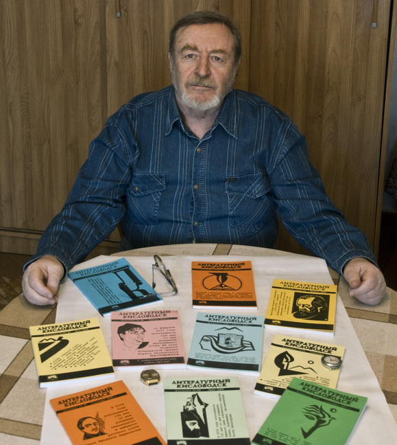

Страницы авторов "Тёмного леса"
Пишите нам! temnyjles@narod.ru

Альманах поэзии "Литературный Кисловодск" выходит с 1996 года. Задуман как ежегодник, но фактически обычно удается выпускать ежеквартально. Объем - 11,5 печатных листов; тираж - от 300 до 400 экземпляров. Альманах состоит из 4 тетрадей разного объема и качества публикуемых материалов. Характерные разделы: "Поэты Зеленой Горы"; "Россия - зона свободы" (современный русский свободный стих); "Народные стихи" (ноу хау "ЛК"); "Друзья "ЛК" издалека" (вся Россия и зарубежные авторы); "Непрочитанные поэты России"; "Литературное эхо" (Рецензии, отзывы на материалы "ЛК"); "Философские странички"; "Балаганчик"; "Детям - большим и маленьким". Обратную связь с читателями (интерактивность) обеспечивает почта "ЛК". За время существования "ЛК" опубликовано более 3500 авторских материалов.
Главный редактор и координатор проекта - Станислав Яковлевич Подольский, член Союза российских писателей и Российского Пен-клуба. Связаться с ним можно по адресу: 357748, Кисловодск, ул. Чайковского 11, кв. 2. Телефон: 8(879-37) 5-49-37. E-mail: stpodolskiy@yandex.ru
Страницы авторов "Литературного Кисловодска"
Последнее изменение страницы 2 Jul 2022